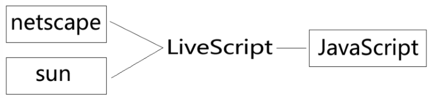

原文连接:https://www.cnblogs.com/dashucoding/p/10713070.html
JavaScript基础系列
JavaScript是一种基于对象和事件驱动的客户端脚本语言。
JavaScript的注释
// 单行 /**/ 多行注释JavaScript变量，函数名和操作符都是区分大小写的。
标识符是变量，函数，属性的名称，函数里的参数。
命名规则：
字母，数字，下划线，美元符号，不能以数字开头
变量的声明与赋值
使用var声明变量
省略var声明的变量是全局变量，不过不推荐使用
JavaScript的基础语法和JavaScript的变量
数据类型和typeof
JavaScript的数据类型分 简单数据类型（基本数据类型）和复杂数据类型。
undefined, null, boolean, number, string复杂数据类型，object
typeof检测变量的类型，变量的类型取决于变量的类型，变量是没有类型的。返回值：string,number,等。
undefined没有定义，变量没有赋值，是undefined
null值为空对象，undefined==null为true
number, isNaN(), Number(), parseInt(), parseFloat()number:表示整数和浮点数
如何与NaN的操作都会返回NaN，与任何值都不相等，包括本身。
isNaN(n)，检测n是否是“非数值”，返回值是boolean
parseInt():会忽略字符串前面的空格，直到找到第一个非空格字符。
console.log(parseInt("0xf",16));toString和String()转换为字符串，使用toString()可以将转换为字符串，如果不知道要转换的值是不是Null，和undefined的情况下，可以使用string()函数。
除0，“”，null，undefined之外的所有数字，转换为布尔型都是true。
逻辑操作符，与，或，非

逻辑或
流程控制语句
分支语句,prompt()的应用,alert()的应用
if(codition){
}else{
}
nan和任何内容都不相等，包括它本身获取星期
new Date().getDay() 获取星期，number(0-6)循环语句
for for-in while do-while
for(语句1;语句2;语句3){
...
}break和continue语句
continue: 结束本次循环，继续开始下一次
JavaScript中的函数，作用，定义，调用
函数的返回值，通过return语句，实现返回值。
function add(num1,num2){
var sum = num1+num2;
return sum;
}
console.log(add(1,2));
// 3return语句在函数中可以停止并立即退出，return语句可以不带有任何返回值，用于停止函数执行。
arguments是ecmascript中的参数在内部用一个数组表示，arguments对象只是与数组类似，并不是array的实例，[]语法用于访问它的每一个元素。
function getAvg(){
var sum = 0; len = arguments.length,i;
for(i=0;i<len;i++){
sum+=arguments[i];
}
}JavaScript中的内置对象
字符串，函数，数组，内置对象
array, string, math, date数组是用来存储一组数据的。
数组方法
push()
unshift()
pop()
shift()
join()
语法：
arrayObject.join();
功能：
用于把数组中的所有元素放入一个字符串
reverse()
语法：
stringObject.reverse()
功能：
用于颠倒数组中元素的顺序
sort()
语法：
arrayObject.sort()
功能：
用于数组的元素进行排序
concat()
语法：
arrayObject.concat();
功能：
用于连接两个或多个数组
slice()
语法：
arrayObject.slice(start,end)
功能：
从已有的数组中返回选定的元素
for(var i=0; i<a.length; i++){
b.push(a[i]);
}
b=[].concat(a);
b=a.slice(0);数组中的splice()方法删除，插入，替换数组
arrayObject.splice(index,count)
删除从Index处开始的元素
返回的是，含有被删除的元素的数组
count删除个数
arrayObject.splice(index,0,item1...)
在指定位置插入值
参数：
index起始位置
0要删除的个数
item1... 要插入的项
返回数组
arrayObject,splice(index,count,item1...)
插入值
返回从原始数组中删除的项
//删除
var delArr=arr.splice(2,0);
//插入
var insertArr=arr.splice(3,0,"m","n",88);
//替换
var replaceArr=arr.splice(1,2,"x","y","z");数组的方法indexOf()和lastIndexOf()
arrayObject.indexOf();
从数组的开头开始向后查找
indexOf(2,0);
第一个参数，查找的元素
第二个参数，从下标哪里查找
arrayObject.lastIndexOf();
从数组的末尾开始查找
function ArrayIndexOf(arr,value){
// 检测value在arr中出现的位置
for(var i=0; i<arr.length; i++){
if(arr[i] === value){
return i;
}
}
return -1;
}字符串对象
charAt()
stringObject.charAt(index)
返回stringObject中index位置的字符
charCodeAt()
返回stringObject中index位置字符的字符编码
indexOf()
lastIndexOf()字符串对象的截取方法：
slice()
stringObject.slice(start,end)
截取子字符串
substring() 不可负数，负数当做0
substr(start,len)字符总数
// 获取扩展名
function get(url){
var pos = url.lastIndexOf(".");
return url.substr(pos);
}分隔符：split();
stringObject.split()
把一个字符串分割成字符串数组
替换replace()
stringObject.replace();
在字符串中用一些字符替换另一些字符
返回值为string
toUpperCase()和toLowerCase()
stringObject.toUpperCase()把字符串转换为大写
stringObject.toLowerCase()把字符串转换为小写JavaScriptDOM基础，事件，对象
JavaScript的组成由ECMAScript，Browser Objects(DOM,BOM)组成的。
获取一个元素和访问一个元素的样式，设置和删除属性。
document.getElementById("id")
document.getElementsByTagName("tag")
设置元素样式
ele.style.styleName=styleValue
innerHTML属性，className属性，Dom元素上添加删除获取
ele.innerHTML=“dashucoding”
获取，设置
ele.className=""
获取，设置
重新设置类的，会替换原来存在的name的
获取
ele.innerHTML
ele.className
获取属性
ele.getAttribute("attribute")
获取ele元素的attribute属性
设置属性
ele.setAttribute("attribute",value);
删除属性
ele.removeAttribute("attribute");事件是文档或浏览器窗口中发生的一些特定的交互瞬间。
鼠标事件
onload:页面加载时触发
onclick:鼠标点击时触发
onmouseover:鼠标滑过时触发
onmouseout:鼠标离开时触发
onfoucs: 获取焦点时
onblur:失去焦点时
onchange:域的内容改变时
var btn = document.getElementById("btn");
btn.onclick=function(){
if(this.className=="dasha"){
this.className="dashucoding";
this.innerHTML="好";
}else{
}
}
btn.onclick = clickBtn;
function clickBtn(){
...
}.btn{ width: 140px; height: 30px; line-height: 30px; background: green; color: #fff; font-size: 14px; text-align: center; border-radius: 5px; cursor: pointer;}<script>
// 页面加载时执行
window.onload=function(){
// 获取box
var box=document.getElementById("box");
var clicked = function() {
alert('点击');
}
box.onclick = clicked;
}<script>
document.onkeypress=function(event){
console.log(event.keyCode);
}
</script>JavaScript中BOM对象
bom浏览器对象模型
对象:
window
navigator
screen
history
location
document
event
alert-confirm-promptwindow.open(pageurl,name,parameters)
打开一个新的浏览器窗口或查找一个已知的窗口
pageurl为子窗口路径
name声明了新窗口的名称
parameters为窗口参数

JavaScript BOM
什么是BOM，window对象，window对象的控制，弹出窗口方法。
什么是BOM，BOM是浏览器对象模型
window是浏览器的一个实例，在浏览器中，window对象有双重角色，JavaScript访问浏览器的窗口，ECMAScript规定的Global对象。
window对象的方法：
window.alert("content")
显示带有一段消息和确定按钮
window.confirm("message")
显示一个带有指定消息和确定及取消按钮
window.prompt("text, defaultText")
要在对话框中显示的纯文本，和默认输入文本
window.open(pageurl, name, parameters)
打开新的浏览器窗口
window.close()
关闭窗口超时调用和间歇调用
setTimeout();
clearTimeout();
setInterval();
clearInterval();location对象提供了与当前窗口中加载的文档有关的信息，还提供了一些导航的功能。
location.href
返回当前加载页面的网站url
location.href = window.location.href
location.hash
返回url中hash(#号后的字符），如果没有返回空字符串
location.host
返回服务器名称和端口号
location.hostname
返回服务器名称
location.pathname
返回url中的目录或文件名
location.port
返回端口号
location.protocol
返回使用协议
location.search
返回url的查询字符串
location.replace();
重新定向url
location.reload();
重新加载当前显示的页面
dom中的history对象
history.back()返回历史记录的上一步
= history.go(-1)
history.forward()回到历史记录的下一步
= history.go(1)
history.go(-n)和history.go(n)
screen对象
screen.availWidth
screen.availHeight
返回屏幕的宽度和高度
navigator对象的userAgent判断浏览器名称，版本等getMonth()和setMonth()
getMonth()返回表示月份的数字
setMonth()用来设置月份
dateObj.getMonth();
dateObj.setMonth(month, day);
var today = new Date(); Console.log(today.getMonth()+1);
var today = new Date();
console.log(today.setMonth(2));
console.log(today.getMonth());DOM事件
什么是事件，HTML事件，DOM0级事件，鼠标与键盘事件，this的用法。
事件是 文档或浏览器窗口中发生的一些交互。
html事件
<tag 事件="执行脚本"> </tag>
函数的调用DOM0级事件
ele.事件=执行脚本鼠标，键盘
onload, onclick, onmouseover, onmouseout, onfocus, onblur, onchange, onsubmit, onmousedown, onmousemove, onmouseup, onresize, onscroll
onkeydown, onkeypress, onkeyup keyCode鼠标事件
onclick 在对象被点击时发生
onmouseover 在鼠标移动到对象时发生
onmouseout 在鼠标移出时发生
onmouseup 在鼠标按键被松开时发生
onmousemove 在鼠标移动时发生
onmousedown 在鼠标按下时发生
onload 子页面元素加载完成时发生
onblur 在对象失去焦点发生
onfocus 在对象获取焦点发生
onchange 在域的内容发生改变时
onsubmit 在表单提交时
onresize 在窗口大小被调整时
onscroll 在滚动条拖动时
onkeydown 在用户按下一个键盘时
onkeypress 按下并释放时发生
onkeyup 在按键被松开时发生
keyCode 在获取按下的按键的字符代码
ele.onclick = function() { 执行脚本 };
ele.onclick = fn;
function fn() { 执行脚本 }；
流程控制语句
if(condition){}
prompt() 弹出输入框
alert() 弹出警告对话框
if(condition){
}else{
}
if(condition){
}else if(condition){
}else {
}
string.length
document.wirte()
new Date().getDay()
switch(expression){
case value:
statement
break;
default:
statement
}
for(1,2,3){
}
while,do-while,for
while(条件){
}
do{
}while()JavaScript中的内置对象
array, string, math, date
push() unshift() pop() shift()
join() reverse() sort() concat() slice() splice()
indexOf() lastIndexOf()
charAt() charCodeAt()
slice(start, end) substring() substr(start, len)
splict() replace()
toUpperCase() toLowerCase()
Math.min() Math.max() Math.ceil() Math.floor() Math.round() Math.abs()
Math.random()日期时间
getFullYear(), getMonth(), getDate(), getDay(),
getHours(), getMinutes(), getSeconds(), getTime()
setFullYear(year), setMonth(mon), setDate(), setDay()
setHours(), setMinutes(), setSeconds(), setTime()JavaScript中的函数
函数的作用，定义，调用，return，arguments
screen对象包含有客户端显示屏的信息
width 返回显示器屏幕的宽度
height 返回显示屏幕的高度
availHight 返回显示屏的高度
availWidth 返回显示屏的宽度
sort()方法用于对数组的元素进行排序
arrObject.sort(function);
var arrSort = arr.sort( function(a,b) { return a>b}); // 升序DOM元素的方法
getElementById()
getElementsByTagName()
getElementsByName()
getElementsByClassName()轮播图
// css
* {
margin: 0;
padding: 0;
}
ul {
list-style: none;
}
body{
font-family: "微软雅黑";
color: #1419;
}
.main{
width: 1200px;
height: 460px;
margin: 30px auto;
overflow: hidden;
position: relative
}
.banner {
width: 1200px;
height: 460px;
overflow: hidden;
position: relative
}
.banner-slide{
width: 1200px;
height: 460px;
position: absolute;
background-repeat: no-repeat;
display: none;
}
.slide-active {
dispaly: block;
}
.slide1{
background-image: url();
}
.slide2{
background-image: url();
}
.slide3{
background-image: url();
}
.button{
position:absolute;
width: 40px;
height: 80px;
left: 244px;
top: 50%;
margin-top: -40px;
background: url() no-repeat center center;
}
.button: hover{
background-color: #333;
opacity: 0.8;
filter:alpha(opacity = 80);
}
.prev {
transfrom: rotate(180deg);
}
.next{
left: auto;
right: 0;
}
.dots{
position:absolute;
right: 0;
bottom: 24px;
text-align: right;
}
.dots span{
display: inline-block;
width: 12px;
height: 12px;
line-height: 12px;
border-radius: 50%;
background: rgba(7,17,27,0.4);
box-shadow: 0 0 0 2px rgba(255, 255, 255, 0.8) inset;
background: #fff;
margin-left: 8px;
cursor: pointer;
}
.dots span.active {
box-shadow: 0 0 0 2px rgba(7,17, 27, 0.4) inset;
background: #fff;
}// html
<!doctype html>
<html lang="en">
<head>
<meta charset="utf-8">
<title>轮播</title>
<link rel="stylesheet" href="css/style.css">
</head>
<body>
<div class="main" id="main">
<div class ="banner" id="banner">
<a href="">
<div class="banner-slide slide1 slide-active"></div>
</a>
<a href="">
<div class="banner-slide slide2"></div>
</a>
<a href="">
<div class="banner-slide slide3"></div>
</a>
</div>
<a href="javascript:void(0)" class="button prev"></a>
<a href="javascript:void(0)" class="button next"></a>
// 圆点
<div class="dots" id="dots">
<span class="active"></span>
<span></span>
<span></span>
</div>
</div>
<script src="js/script.js"></script>
</body>
</html>function byId(id){
return typeof(id) === "string" ? document.getElementById(id) : id；
}
var index = 0, timer = null,
pics = byId("banner").getElementsByTagName("div"),
len = pics.length;
function slideImg() {
var main=byId("main");
main.onmouseover=function(){
if(timer) clearInterval(timer);
}
main.onmouseout = function(){
timer = setInterval(function(){
index++;
if(index >= len){
index = 0;
}
changeImg();
console.log(index);
},3000);
}
main.onmouseout();
}
slideImg();结言
好了，欢迎在留言区留言，与大家分享你的经验和心得。
感谢你学习今天的内容，如果你觉得这篇文章对你有帮助的话，也欢迎把它分享给更多的朋友，感谢。
感谢！承蒙关照！您真诚的赞赏是我前进的最大动力！